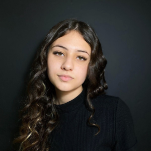

OLÁ, EU SOU A JULIA!👋
Possuo ensino médio completo no Sesi 123. Atualmente estou estudando na Faculdade de tecnologia Senai onde estou cursando análise e desenvolvimento de sistemas, juntamente com um estágio na 2RP.Tem experiência na área de Ciência da Computação, com ênfase em Sistemas de Informação.